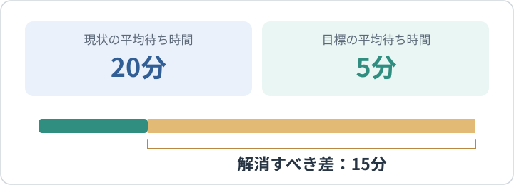
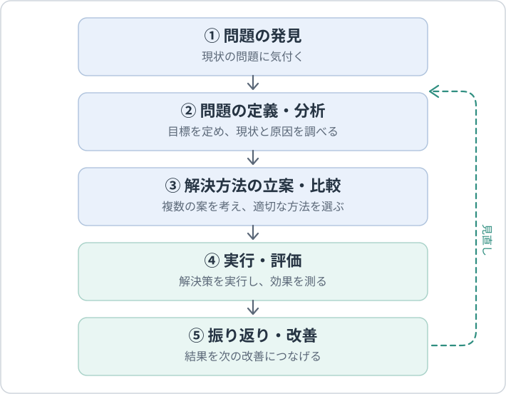
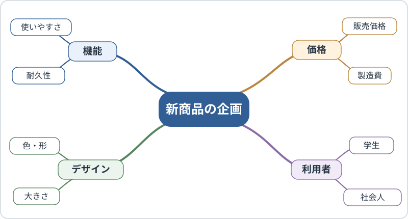
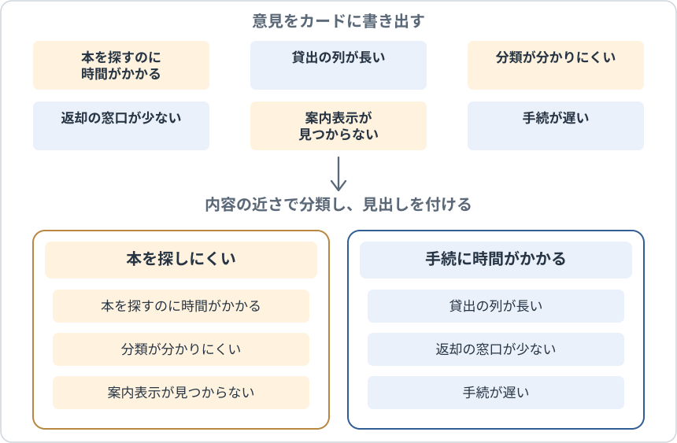
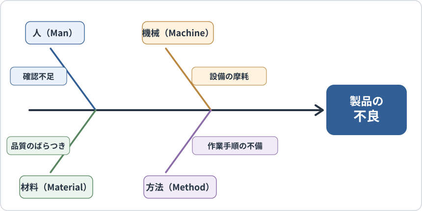
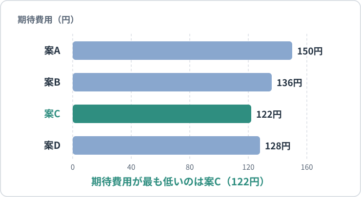

新商品の企画で、中心テーマから関連語を枝分かれさせ、考えを視覚的に広げて整理した。この手法はどれか。
- 0
KJ法
- 1
ブレインストーミング
- 2
マインドマップ
- 3
単純集計
解答・解説を確認
正解2．マインドマップ
解説
中心テーマから放射状に語句や図を結び付けて発想を広げる手法はマインドマップです。マインドマップは中心から枝を伸ばして関連を広げます。KJ法は意見を分類する段階、ブレインストーミングは案を多く出す段階に適します。
- 出典
- オリジナル
TERM GUIDE · INFORMATION
問題解決とは、現状と望ましい状態との間にある差を明らかにし、その差を小さくするための方法を考え、実行して、結果を評価する一連の活動のことです。
私たちは日常生活や学校、社会のさまざまな場面で問題に直面します。例えば、学校の食堂が混雑している、図書館の貸出手続に時間がかかる、製品の不良品が多いといった状況です。
こうした問題を解決するには、思い付きだけで対策を実行するのではなく、現状を調べ、原因を分析し、適切な解決方法を選ぶことが重要です。
問題解決では、問題を「現状と望ましい状態（目標）との差」として捉えることが基本です。
例えば、学校図書館の貸出手続について、次のような状況を考えます。
この場合、現状と目標の差である15分が、解消すべき問題を表しています。

ここで、「新しい受付システムを導入する」というのは問題そのものではなく、問題を解決するための手段の一つです。
待ち時間が長い原因は、受付の方法だけでなく、窓口の数や利用者が集中する時間帯などにもあるかもしれません。原因を調べずにシステムを導入しても、期待した効果が得られない可能性があります。
そのため、何が問題なのかと、どのように解決するのかを区別して考える必要があります。
問題解決は、一般に次のような手順で進めます。
問題の発見 → 問題の定義・分析 → 解決方法の立案・比較 → 実行・評価 → 振り返り・改善

まず、現状を観察し、改善が必要な状況を見つけます。
例えば、校内食堂で「昼休みに長い行列ができ、食事の時間が短くなる」という状況が確認されたとします。
利用者から寄せられた意見や現場の観察、記録などが問題を発見するきっかけになります。
発見した問題について、何をどの程度改善すべきかを明確にし、その原因を調べます。
食堂の例では、次のような点を調査します。
例えば、「平均待ち時間を20分から5分以内に短縮する」という具体的な目標を設定します。
目標を数値などで明確にしておくと、解決策を実行した後に効果を確認しやすくなります。
また、問題の原因が会計にあるのか、調理にあるのか、利用者の集中にあるのかによって、適切な対策は異なります。そのため、現状を客観的なデータに基づいて把握することが重要です。
原因を分析したら、解決方法を考えます。
例えば、食堂の混雑を減らすために、次のような方法が考えられます。
これらの方法について、費用、期待される効果、実現可能性、必要な時間などを比較し、目的に合ったものを選びます。
最初に思い付いた案や、最も費用が高い案が、必ずしも最適な方法とは限りません。
選んだ解決方法を実行し、その効果を確かめます。
例えば、改善策によって平均待ち時間が20分から8分になった場合、12分の短縮には成功しています。しかし、目標の5分にはまだ達していません。
このように、解決策を実行したことと、問題が解決したことは同じではありません。
実行後の状況を測定し、目標と比較して評価する必要があります。
評価結果をもとに、うまくいった点や改善が必要な点を整理します。
目標を達成できなかった場合は、原因の分析や解決方法を見直します。また、目標を達成できた場合でも、新たな問題が生じていないかを確認します。
問題解決は一度で終わるとは限りません。結果を振り返り、必要に応じて前の段階に戻りながら改善を繰り返すことが大切です。
解決方法を考える段階では、多様なアイデアを生み出すための発想法が役立ちます。
ブレインストーミング（ブレーンストーミング）は、複数の人が自由に意見やアイデアを出し合う方法です。
一般に、次の四つの原則を重視します。
| 原則 | 内容 |
|---|---|
| 批判しない | 出されたアイデアをその場で否定しない |
| 自由に発想する | 実現が難しそうな案も歓迎する |
| 量を重視する | できるだけ多くのアイデアを出す |
| 組み合わせて発展させる | 他の人の案を参考に、新しい案を生み出す |
例えば、食堂の混雑を減らすために、参加者が自由に改善案を出し合います。
この段階では、アイデアをすぐに評価するのではなく、できるだけ多くの可能性を見つけることを重視します。
マインドマップは、中心にテーマを書き、そこから関連する言葉やアイデアを放射状に枝分かれさせて整理する方法です。
例えば、新商品の企画であれば、中心に「新商品」と書き、そこから「価格」「機能」「デザイン」「利用者」などの枝を伸ばします。
さらに、「利用者」から「学生」「社会人」、「機能」から「使いやすさ」「耐久性」といったように、関連する考えを広げていきます。

マインドマップは、一つのテーマを中心として発想を広げ、考え同士のつながりを視覚的に整理することに適しています。
多くのアイデアや意見を集めても、それらが整理されていなければ、問題の全体像をつかむことは難しくなります。
そこで、情報同士の関係を整理する方法が役立ちます。
KJ法は、集めた意見や情報を一つずつカードに書き出し、内容の近いものをまとめながら、全体の関係や構造を明らかにする方法です。
文化人類学者の川喜田二郎によって考案されました。

基本的には、次のような手順で進めます。
例えば、学校図書館について、利用者から次のような意見が集まったとします。
これらを内容の近さでまとめると、「本を探しにくい」「手続に時間がかかる」といったグループができます。
その結果、個々の意見だけを見ていたときには分かりにくかった課題のまとまりが見えてきます。
KJ法では、最初から分類項目を決めて機械的に振り分けるのではなく、カードの内容の近さからグループを作ることが特徴です。
さらに、グループ間の関係を整理することで、隠れていた課題や新しい考えの発見につなげます。
ブレインストーミング、マインドマップ、KJ法は、いずれも問題解決で役立ちますが、主な目的が異なります。
| 手法 | 主な目的 | 特徴 |
|---|---|---|
| ブレインストーミング | アイデアを多く出す | 批判せず、自由に発想する |
| マインドマップ | 発想を広げ、関連を整理する | 中心から放射状に枝を伸ばす |
| KJ法 | 集めた情報を分類・構造化する | カードをグループ化し、見出しを付ける |
例えば、ブレインストーミングで多くのアイデアを出した後、KJ法でそれらを整理するというように、複数の手法を組み合わせることもできます。
問題が発生していることが分かっても、その原因が明らかでなければ、適切な解決方法を選ぶことはできません。
問題の原因を考えるときには、特性要因図などが役立ちます。
特性要因図は、ある問題や結果に対して、その原因として考えられる要因を整理する図です。
魚の骨のような形をしていることから、フィッシュボーン図とも呼ばれます。
図の右端に問題となる結果を置き、そこに向かう大きな骨に原因を探すための分類を配置します。さらに、小さな骨に具体的な原因候補を書き込みます。

例えば、「製品の不良が多い」という問題について考える場合、人、機械、材料、方法といった観点から原因候補を整理できます。
この四つの観点は、頭文字を取って4Mと呼ばれます。
| 分類 | 意味 | 原因候補の例 |
|---|---|---|
| Man（人） | 作業者など人的な要因 | 確認不足、作業の不慣れ |
| Machine（機械） | 機械や設備の要因 | 機械の摩耗、設備の故障 |
| Material（材料） | 材料や原料の要因 | 材料の品質のばらつき |
| Method（方法） | 作業方法や手順の要因 | 手順の不備、作業方法の違い |
4Mは製造現場などでよく使われる分類ですが、必ずこの四つに分ける必要があるわけではありません。対象とする問題に合わせて、適切な観点を設定します。
特性要因図を使うときは、原因候補と改善策を区別することが重要です。
例えば、「料理が予定時刻までに完成しない」という問題について考えます。
| 原因候補（なぜ起きたか） | 改善策（どう変えるか） |
|---|---|
| 材料の解凍開始が遅い | 解凍を早めに始める |
| 加熱器具が不足している | 調理工程の順序を見直す |
| 担当者が決まっていない | 作業の担当を事前に決める |
特性要因図では、まず「なぜ問題が起きたのか」という原因候補を整理します。
「工程順を組み替える」「タイマーで管理する」といった内容は、原因そのものではなく、原因に対する改善策です。
特性要因図に書いた項目は、原因として考えられるものを整理しただけであり、すべてが事実として確定しているわけではありません。
例えば、「機械の摩耗」が原因候補として挙がった場合でも、実際に摩耗が発生しているか、それが製品の不良に関係しているかを調べる必要があります。
原因分析では、次のように進めます。
つまり、特性要因図は原因を確定するためのものではなく、原因についての仮説を整理し、調査や検証につなげるための道具です。
問題解決では、情報の関係を分析したり、解決策を実行するための作業を管理したりする方法も用いられます。
| 手法 | 主な用途 |
|---|---|
| 連関図法 | 複雑に関係する要因同士を矢印で結び、因果関係などを整理する |
| マトリックス図法 | 複数の項目群の関係を、行と列を使った表で整理する |
| ガントチャート | 作業の開始・終了時期や進捗を時間軸上の横棒で表す |
| PERT | 作業の前後関係と所要時間から、工程全体や必要な日程を分析する |
例えば、学校行事を準備する場合、ガントチャートを使えば、会場の準備や資料の作成などをいつ行うのかを一覧で確認できます。
一方、PERTでは、ある作業を終えないと次の作業を始められないといった前後関係を考慮し、全体の所要時間や日程に大きく影響する作業のつながりを調べます。
KJ法は意見や情報の整理に、ガントチャートやPERTは作業工程の計画・管理に用いるという違いを理解しておきましょう。
問題を解決するための方法が複数ある場合は、それぞれの費用や効果、実現可能性などを比較して選びます。
費用や効果が状況によって変わる場合には、期待値を利用して比較することがあります。
期待値とは、ある結果が生じる確率と、その結果の値を掛け合わせて合計したものです。
期待値＝（結果の値×その結果が生じる確率）の合計
例えば、部品の検査について、良品の確率が0.9、不良品の確率が0.1であるとします。
検査方法によって、良品と不良品の場合に次のような費用がかかるものとします。
| 検査案 | 良品の場合 | 不良品の場合 |
|---|---|---|
| 案A | 0円 | 1,500円 |
| 案B | 40円 | 1,000円 |
| 案C | 80円 | 500円 |
| 案D | 120円 | 200円 |
それぞれの期待費用を計算します。
案A
0.9×0＋0.1×1,500＝150円
案B
0.9×40＋0.1×1,000＝136円
案C
0.9×80＋0.1×500＝122円
案D
0.9×120＋0.1×200＝128円
この結果、期待費用が最も低いのは案Cの122円です。

案Aは良品の場合に費用がかかりませんが、不良品の場合には高額な費用が発生します。一方、案Cは良品の場合にも費用がかかりますが、不良品の場合の費用を比較的低く抑えられます。
このように、発生する可能性が異なる結果を比較するときは、単に一番安い金額を選ぶのではなく、確率を考慮する必要があります。
ただし、期待費用が最も低い案が、必ずしもすべての場面で最適とは限りません。大きな損失が発生するリスクや安全性、品質なども判断材料になります。
問題解決では、手法の名前を覚えるだけでなく、どの段階で、何のために使うのかを理解することが重要です。
例えば、学校の食堂の混雑を改善する場合、まず待ち時間を測定して問題を明確にします。次に特性要因図などで原因候補を整理し、実際のデータで検証します。
その後、ブレインストーミングなどで改善案を出し、必要に応じてKJ法で整理します。複数の案について費用や効果を比較し、適切な方法を選んで実行します。
最後に、実行後の待ち時間を測定し、目標に近づいたかを評価します。
このように、現状を調べ、原因を分析し、根拠に基づいて対策を選び、その効果を確かめることが、問題解決の基本です。
EXAMPLE
KJ法
ブレインストーミング
マインドマップ
単純集計
正解2．マインドマップ
中心テーマから放射状に語句や図を結び付けて発想を広げる手法はマインドマップです。マインドマップは中心から枝を伸ばして関連を広げます。KJ法は意見を分類する段階、ブレインストーミングは案を多く出す段階に適します。
PRACTICE